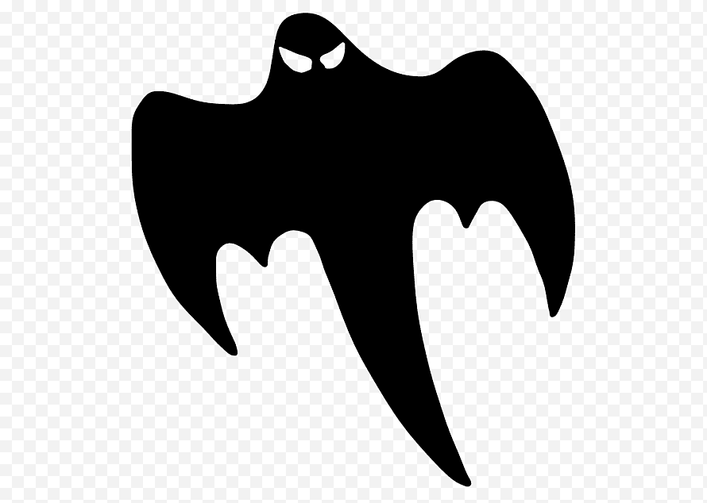

Cosas Paranormales
Proposito de la pagina
Bienvenidos a los Rincones del Miedo Explora lo desconocido. Enfrenta lo inexplicable. Sobrevive si puedes.
Cuando cae la oscuridad y el mundo parece dormir en calma, hay puertas que comienzan a abrirse… puertas que jamás debieron ser tocadas. Aquí, en este espacio digital, nos adentramos en lo más profundo del miedo humano: el susurro detrás de la puerta cerrada, la figura que se esconde en la esquina de tu habitación, el reflejo que no te imita del todo. Esta página no es solo un archivo de terror. Es un portal. Un umbral hacia historias malditas, leyendas olvidadas, criaturas que habitan en la periferia de la realidad y testimonios escalofriantes que desafían la lógica. Cada rincón ha sido creado para arrastrarte a una experiencia inmersiva: relatos escritos con sangre, sonidos que hielan la sangre, imágenes que permanecerán contigo mucho después de cerrar la pantalla. Aquí encontrarás: Relatos originales de horror psicológico, paranormal y gore Expedientes reales sobre crímenes inexplicables y fenómenos sin resolver Juegos interactivos, desafíos nocturnos y acertijos oscuros Videos y audios malditos recuperados de los confines de la red Entrevistas con testigos de lo imposible y expertos en lo oculto Pero una advertencia antes de continuar: el miedo no es solo entretenimiento. Algunas historias dejan huellas. Algunos visitantes aseguran haber oído cosas después de leer, haber soñado con voces, haber sentido que algo... los observaba. Si decides seguir adelante, hazlo bajo tu propio riesgo. Porque en esta página, el terror no termina cuando apagas la luz. |
 |
 |
 |
 |
 |